DIABETES CHECKPOINT PRO APP
1. OVERVIEW
In today’s fast-paced world, lifestyle choices have a significant impact on our well-being. Our daily decisions, from the foods we consume to our exercise routines and stress levels, play a pivotal role in determining our overall health. One of the most prevalent and growing health concerns is diabetes, a chronic metabolic condition that affects millions of people in the United States. The crucial link between lifestyle factors and the development of diabetes cannot be overstated, and a substantial portion of diabetes cases is preventable through modifications in one’s way of life.
In light of the paramount importance of health in the United States, we have embarked on a transformative initiative, the “Diabetes Checkpoint Pro App.” This application represents a forward-looking approach to health management and is dedicated to fostering a healthier, more vibrant future for all.
1.1 PROJECT BACKGROUND AND DESCRIPTION
This project diagnostically predicts whether or not a patient has diabetes based on healthcare statistics and lifestyle survey information. The project is inherently fascinating because it addresses a pressing public health concern, as diabetes, affecting millions of people in the US, with significant implications for individual well-being. Moreover, it delves into the intricate interplay between lifestyle choices and health outcomes, offering an opportunity to unveil the modifiable factors contributing to diabetes risk.
The proposed benefits of the solution are multi-faceted and compelling. Firstly, early detection of diabetes is crucial for timely intervention, leading to better health outcomes and a reduction in the development of complications associated with the disease. Secondly, the solution holds the potential for substantial cost savings, as reducing the incidence of diabetes can lower healthcare costs for individuals and healthcare systems. In terms of problem type, this project focuses on classification. Specifically, it involves categorizing individuals into two distinct groups: those who have diabetes and those who do not. This binary classification task leverages healthcare statistics and lifestyle survey data to predict a patient’s diabetes status.
1.2 PROJECT SCOPE
- Generative Methods Based Analysis of the dataset
- 1.1 Traditional exploration and analysis to predict diabetes.
- 1.1.1 Preliminary visual exploration and analysis of the data set - perform EDA to understand the correlation between all feature variables and patterns in the dataset. Visualizations will include bar charts, heatmaps, and density plots.
- 1.1.2 Propose a possible outcome of the analysis - From preliminary exploration, we aim to identify potential variables that strongly influence diabetes. For instance, “Based on initial analysis, it seems variables like ‘BMI’ and ‘highBP’ have a significant impact on diabetes.”
- 1.2 Boosting Analysis of the Dataset
- 1.2.1 Use boosting to predict diabetes.
- 1.2.2 Alter the parameters for the boosting procedure: for example, n_estimators in [50, 75, 100, 125, 150, 200] and learning rate in [0.1, till 1.0] for gradient boosting.
- 1.2.3 Compare the results from different parameters to identify the best model. Understand the implications of these results for diabetes predictions.
- 1.3 Bagging Analysis of the Dataset
- 1.3.1 Use bagging to predict diabetes.
- 1.3.2 Alter the parameters for the boosting procedure: for example, n_estimators in [50, 75, 100, 125, 150, 200] and learning rate in [0.1, till 1.0] for gradient boosting.
- 1.3.3 Compare the results from different parameters to identify the best model. Understand the implications of these results for diabetes predictions.
Non - Generative Methods Based Analysis of the dataset. Repeat 1.1-1.3 for the Nongenerative methods. Including logistic regression and decision trees, to compare the efficiency and accuracy of both approaches.
Hyperparameter tuning and analysis will be performed based on the results of 1 and 2. We’ll use techniques like Grid Search or Random Search to find the best set of hyperparameters for our model, ensuring the most accurate diabetes predictions.
App Deployment: Once our model is finalized, we’ll transition to deploying it as a web application. The app will be hosted on either Heroku, AWS, or Google Cloud platform. Continuous monitoring and updates based on user feedback and any observed issues will be made post-deployment.
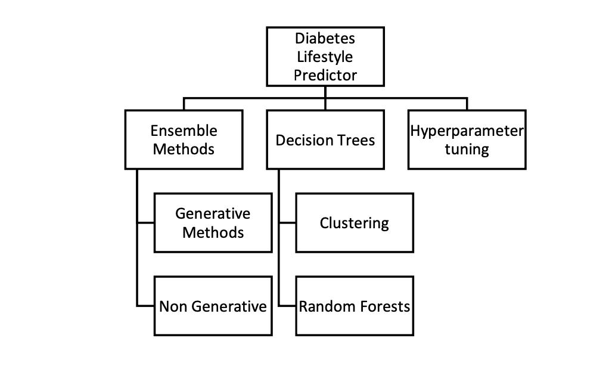
1.3 OUT OF SCOPE
Personalized insights and tailored healthcare solutions are beyond the intended scope and objectives of this project.
1.4 CONSTRAINTS
- The dataset may be limited in size, and class imbalance issues could exist. Addressing these constraints may require techniques such as data augmentation, resampling, or obtaining additional data sources.
- Achieving high accuracy in diabetes predictions is critical. Any constraints related to model performance should be identified and addressed through optimization techniques.
- Resource constraints, including computing power and memory, may affect the scalability and performance of the predictive models, particularly during hyperparameter tuning.
2. INTRODUCTION
This project categorizes individuals into two groups: those at risk of developing diabetes and those not at risk. This categorization is based on an individual’s healthcare statistics, including features like BMI, high blood pressure, and lifestyle survey data. The “Diabetes checkpoint pro App” integrates data preprocessing, feature engineering, model training, and application deployment.
3. ABOUT THE DATA
The Diabetes Health Indicators Dataset for 2015 is a dataset obtained from the UCI Repository. This dataset includes a wide variety of healthcare information and lifestyle survey responses from individuals, as well as their diabetes diagnosis. Specifically, it comprises 21 features, including demographic information, laboratory test results, and survey answers for each patient. The main target variable for classification purposes is the distinction between patients with diabetes (including pre-diabetic individuals) and those who are healthy. Initially, the feature and target variables were extracted and subsequently merged into a single dataset, resulting in a total dataset size of 253,680 records (as depicted in Table 1, which provides a detailed description of the variables).
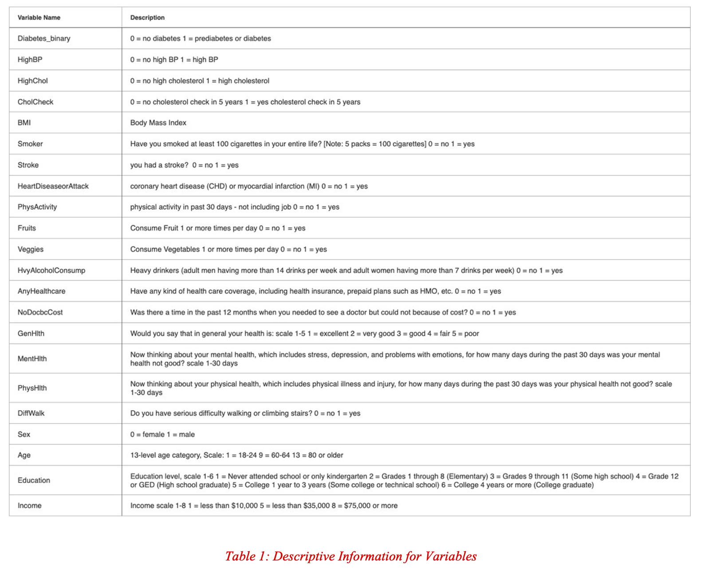
4. ANALYSIS OF THE DATA
4.1 EXPLORATORY ANALYSIS AND VISUALIZATION
Data cleaning and processing EXPLORARTORY play a pivotal role in the data analysis pipeline, serving as the crucial initial steps that pave the way for meaningful insights and well-informed decision-making. During the preliminary data cleaning phase, various vital procedures were executed. Missing values were carefully examined, duplicates were identified and subsequently removed, and the dataset’s structure and type were assessed. Notably, it was determined that there were no missing values within the dataset, ensuring data integrity. However, an imbalance in the target variable was observed, with 35,346 records representing diabetic patients and 218,334 records corresponding to individuals without diabetes (Figure 1). To address this imbalance and ensure that our model possesses sufficient information to effectively detect the target condition, we opted for an up-sampling technique.
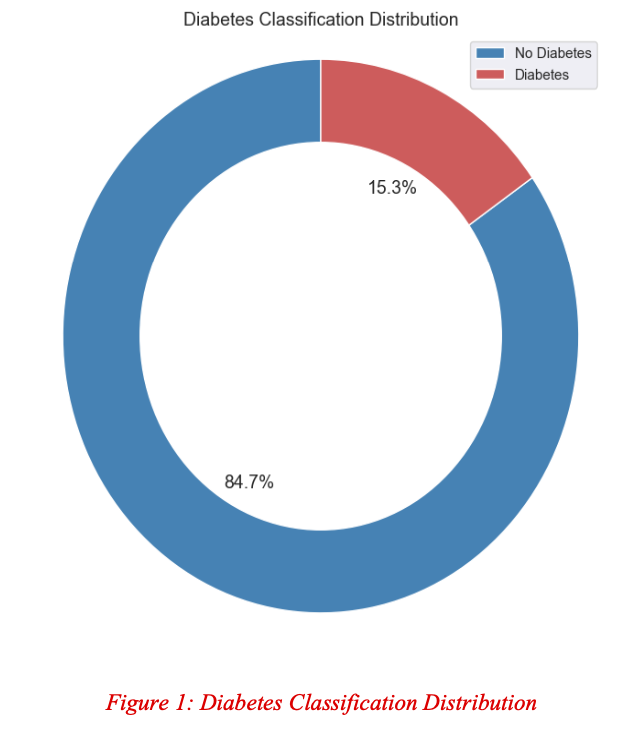
Moreover, as part of data enhancement, two new variables were introduced: ‘lifestyle_score’ and ‘bmi_category.’ Recognizing the importance of lifestyle-related factors in health, we leveraged variables such as ‘Smoker,’ ‘HvyAlcoholConsump,’ ‘PhysActivity,’ ‘Fruits,’ and ‘Veggies’ to create a comprehensive indicator termed ‘lifestyle_score.’ This composite score provides a holistic view of an individual’s lifestyle choices and behaviors, enabling a more nuanced analysis of their potential health impact. Additionally, we categorized the Body Mass Index (BMI) into four distinct categories: ‘underweight,’ ‘normal weight,’ ‘overweight,’ and ‘obese,’ denoted by values 1 to 4, respectively. This categorization, captured under the label ‘BMI_category,’ simplifies the assessment of an individual’s weight status, facilitating the identification of potential health risks associated with different BMI categories. These data processing steps are instrumental in preparing the dataset for subsequent analysis and modeling, ensuring the quality and relevance of the information used for medical condition detection.
 The summary statistics, as showcased in Table 2, offer a comprehensive overview of the dataset, uncovering significant health-related and demographic trends. Notably, a substantial proportion of individuals experience high blood pressure (57.6%) and elevated cholesterol levels (53.5%). A proactive health-consciousness is evident, with nearly all individuals (around 97.3%) having undergone cholesterol checks. Smoking prevalence stands at 48.7%, while strokes are relatively less common (approximately 6.5%). Around 15.4% have a history of heart disease or heart attacks. Positive lifestyle indicators include regular physical activity (69%) and a relatively healthy dietary habit (7.8 servings of fruits and vegetables on average). The data also showcases a balanced gender distribution, a diverse age range (mean age ≈ 67), relatively high education (mean ≈ 4.8), and a moderate income level (mean ≈ 5.6). The newly introduced “Lifestyle Score” suggests moderately healthy lifestyle choices (mean ≈ 3.9). These insights provide valuable guidance for targeted healthcare strategies and interventions aimed at addressing prevalent health concerns and promoting overall well-being within this population.
The summary statistics, as showcased in Table 2, offer a comprehensive overview of the dataset, uncovering significant health-related and demographic trends. Notably, a substantial proportion of individuals experience high blood pressure (57.6%) and elevated cholesterol levels (53.5%). A proactive health-consciousness is evident, with nearly all individuals (around 97.3%) having undergone cholesterol checks. Smoking prevalence stands at 48.7%, while strokes are relatively less common (approximately 6.5%). Around 15.4% have a history of heart disease or heart attacks. Positive lifestyle indicators include regular physical activity (69%) and a relatively healthy dietary habit (7.8 servings of fruits and vegetables on average). The data also showcases a balanced gender distribution, a diverse age range (mean age ≈ 67), relatively high education (mean ≈ 4.8), and a moderate income level (mean ≈ 5.6). The newly introduced “Lifestyle Score” suggests moderately healthy lifestyle choices (mean ≈ 3.9). These insights provide valuable guidance for targeted healthcare strategies and interventions aimed at addressing prevalent health concerns and promoting overall well-being within this population.
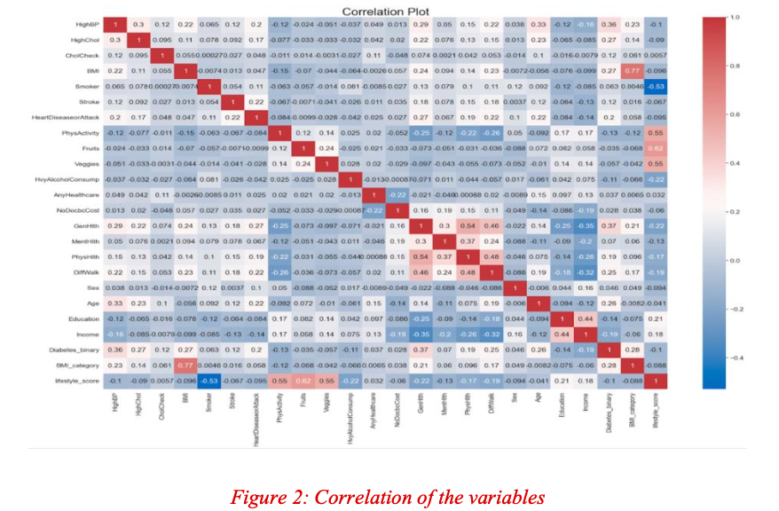
The analysis of the variables within the dataset, as depicted in Figure 2, reveals important insights into their correlations. Notably, none of the variables exhibit notably high positive or negative correlations, indicating a lack of dominant linear associations. However, noteworthy correlations emerge, providing valuable insights into the factors that influence individual health. For example, a positive link is observed between ‘General Health’ and ‘Physical Health,’ highlighting their interconnectedness. The correlation between ‘Difficulty in Walking’ and ‘Physical Health’ underscores the influence of physical limitations on overall well-being. ‘Income’ and ‘Education’ display a correlation, reflecting the socio-economic trend of higher education levels leading to increased income. ‘BMI’ naturally correlates highly with ‘BMI Category.’ Additionally, ‘Lifestyle’ correlates with ‘Smoker,’ ‘Fruits,’ ‘Veggies,’ and ‘Alcohol Consumption,’ aligning with its composite nature. The absence of strong correlations emphasizes the multifaceted nature of health outcomes, shaped by intricate interactions among various factors, underscoring the complexity of individual well-being.
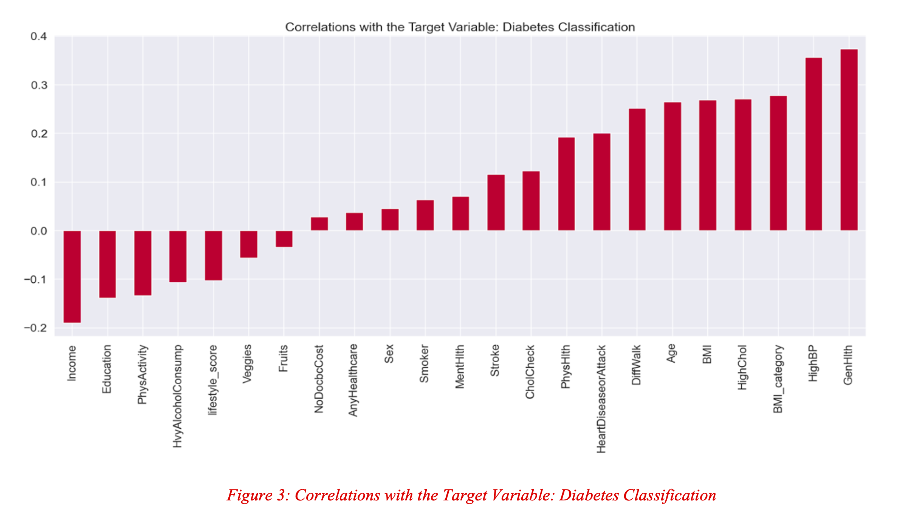The detailed correlation of feature variable with target variable, which extends the initial bar plot, is shown in Figure 3. It provides important information about the factors influencing how the “diabetes_binary” variable interacts with the feature variables. “Diabetes_binary” demonstrates positive correlations with “GenHlth,” “HighBP,” “HighChol,” “BMI,” “stroke,” “HeartDiseaseorAttack,” “PhysHlth,” and “Age,” indicating that elevated levels of these factors are associated with a higher risk of diabetes. Conversely, negative correlations are observed between “diabetes_binary” and “PhysActivity,” “Fruits,” “Veggies,” “HvyAlcoholConsump,” “lifestyle_score,” “Education,” and “Income,” highlighting that greater physical activity, healthier dietary choices, and higher income levels are linked to a reduced risk of diabetes.
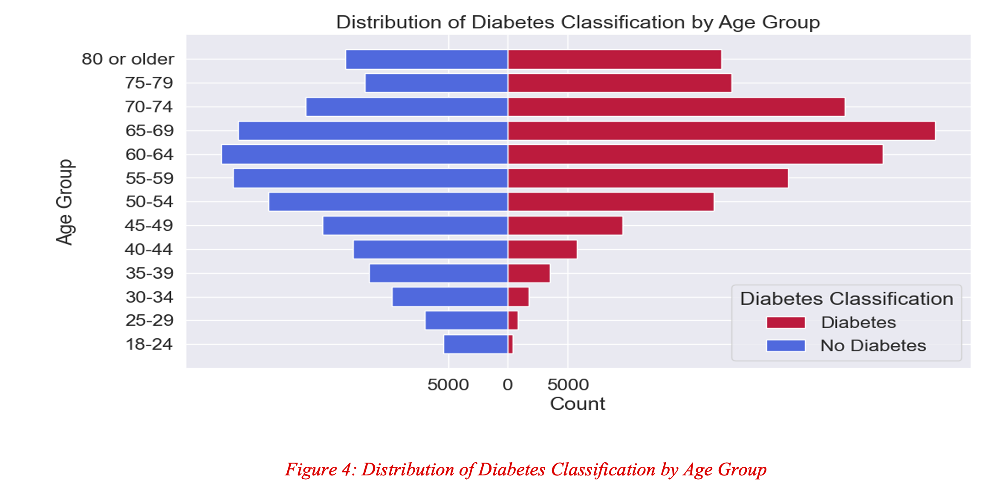
The number of cases of diabetes and non-diabetes as they relate to age is shown in Figure 4. It highlights the common trend of diabetes becoming more prevalent as individuals age, particularly in the 65-69 age group. This can be attributed to age-related physiological changes and increased susceptibility to chronic health conditions in older individuals. Meanwhile, the highest number of non-diabetic cases occurs in the 60-64 age group, possibly reflecting the effects of preventive healthcare measures in this age cohort, better management of risk factors, and relatively healthier lifestyle choices. This contrast underscores the interplay of factors like lifestyle, genetics, and healthcare accessibility. Beyond age 70, there is a decline in diabetic cases, likely influenced by medical interventions, lifestyle changes, and natural health fluctuations.
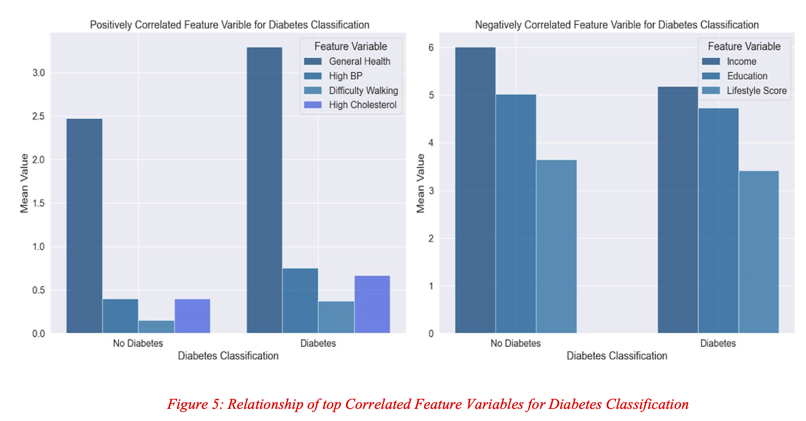
The Positively and Negatively Correlated Feature Variables for Diabetes Classification are shown in Figure 5 as patterns. The positively Correlated Feature Variables for Diabetes Classification can be attributed to the known risk factors for diabetes. Lower ‘General Health’ and higher ‘HighBP’, ‘Difficulty in Walking’, and ‘High Cholesterol’ levels are established risk factors for diabetes. Individuals with diabetes typically experience a higher prevalence of these factors due to the adverse effects of the disease on overall health and metabolic functions. In the ‘Negatively Correlated Feature Variables for Diabetes Classification’, the association between higher ‘Income’ and reduced diabetes risk is likely due to improved access to healthcare, better nutrition, and living conditions associated with higher income levels. Higher income often equates to a more health-conscious lifestyle, reducing the likelihood of developing diabetes. These observations emphasize the importance of addressing risk factors and socioeconomic disparities in diabetes prevention and management.
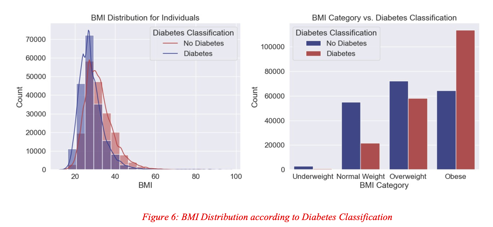
When looking at the concentration of BMI values in Figure 6, that shows the “BMI Distribution for Individuals,” a startling result becomes evident. There’s a noticeable clustering of BMI values between 20 and 40, with a peak around 30. However, what makes this plot particularly intriguing is the sudden decrease in the count of individuals with diabetes around the peak BMI of 30. Beyond this threshold, the count of individuals without diabetes surpasses those with diabetes. This observation suggests the presence of a potential BMI threshold, around 30, beyond which the risk of diabetes significantly decreases. The ‘BMI Category vs. Diabetes Classification’ analysis further underscores the relevance of BMI in assessing diabetes risk, highlighting ‘Obese’ individuals as having a significantly higher diabetes count and emphasizing the critical role of obesity as a risk factor for diabetes, particularly when compared to individuals with a healthy weight.
As the lifestyle score rises, the distribution becomes more concentrated, with the peak occurring around a score of 4, denoting a better lifestyle, as seen in Figure 7’s violin plot of the Lifestyle Score Distribution by Diabetes Classification. This score’s range spans from 0 (unhealthiest) to 5 (healthiest). What’s particularly noteworthy is that individuals without diabetes exhibit a more favorable distribution, highlighting the clear association between a healthier lifestyle, denoted by a higher lifestyle score, and a reduced risk of diabetes. This association underscores the impact of lifestyle choices on diabetes risk, with healthier habits playing a crucial role in mitigating the condition.
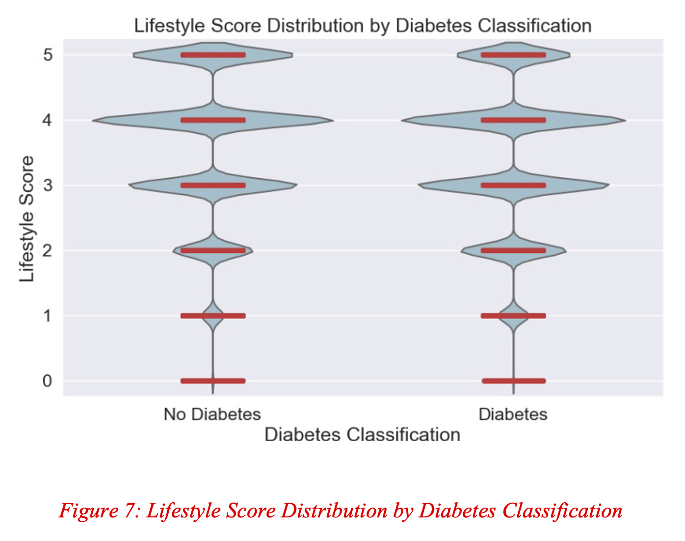
4.2. BASELINE MODEL
In the baseline model development process, the dataset is divided into three distinct subsets: the training set, the validation set, and the test set, each with a specific role. The training set, comprising 70% of the data, is utilized for teaching the machine learning model to identify patterns and relationships within the data. The validation set, representing 30% of the data, serves to fine-tune the model’s hyperparameters and assess its performance, aiding in selecting the best-performing model. This systematic partitioning ensures the model’s robustness and ability to perform well on new, unseen data, a critical step in the model development process. After normalizing the data, the shapes are Normalized training features (190,488, 21), Normalized validation features (81,639, 21), and Normalized test features (116,627, 21).
In the initial phase of our model development, we delve into the realm of classification using a range of diverse machine learning algorithms. This ensemble includes Logistic Regression, Decision Tree Classifier, Gaussian Naive Bayes (GaussianNB), Random Forest Classifier, Bagging Classifier, Gradient Boosting Classifier, and XGBoost Classifier. These algorithms are employed to build and assess the performance of the classification models, employing metrics such as accuracy, precision, recall, and the F1-score for evaluation. To facilitate a comparative analysis of each model’s performance, box plots are created, offering a comprehensive view of their effectiveness.
To enhance the model development process, K-fold Cross Validation is employed, providing significant benefits such as reducing overfitting, maximizing data utilization, assisting in model selection and hyperparameter tuning, and deepening the understanding of the bias-variance trade-off. Additionally, cross-validation enhances result stability and robustness, contributing to the reliability of the model evaluation process.
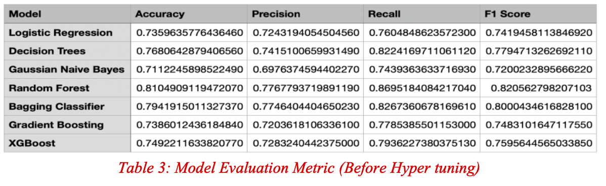
Our model evaluation process highlights the Random Forest model as a standout performer, even without the application of hyperparameter tuning. With an impressive accuracy of 0.810, it underscores its ability to effectively classify individuals with and without diabetes. Notably, the Random Forest model excels in precision, recall, and F1-Score, achieving values of 0.777, 0.870, and 0.821, respectively. In contrast, other models, such as Logistic Regression, Decision Trees, Gaussian Naive Bayes, Bagging Classifier, Gradient Boosting, and XGBoost, exhibit slightly lower performance, as shown in Table 3. This observation emphasizes the Random Forest model’s robustness in predicting diabetes cases within the dataset. Furthermore, it’s essential to highlight that further optimization through hyperparameter tuning may enhance these results, solidifying the Random Forest model’s position as a promising candidate for effective diabetes classification. The Decision Trees model also demonstrates strong performance and is a close contender.
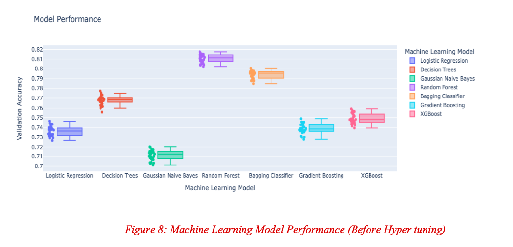
Additionally, we have visualized the model performance using a box plot for validation data, providing further insights into the models’ behavior, as shown in Figure 8. The box plot illustrates that the ‘Random Forest’ model boasts the highest median, suggesting its superior performance on the given task compared to other models with lower medians. Furthermore, it features a narrower box, indicating that the model’s performance remains consistent across various data subsets. Notably, there are no outliers present in its performance. In conclusion, the ‘Random Forest’ consistently outperforms other models, making it a strong candidate for the best-performing model.
5. HYPERPARAMETER TUNING
In our pursuit of optimizing model performance, hyperparameter tuning plays a pivotal role. Hyperparameters are predefined parameters that exert a significant influence on a machine learning model’s behavior and overall performance. To navigate this critical stage, we have opted to utilize GridSearchCV, a method renowned for its computational efficiency in fine-tuning our models.
GridSearchCV systematically explores a predefined range of hyperparameters for a machine learning classifier, training multiple models with varying hyperparameter combinations. Each model undergoes k-fold cross- validation, where the training data is partitioned into k subsets, with one held for validation and the rest for training. The accuracy metric assesses the model’s performance during each cross-validation iteration. Afterward, the average accuracy score across these iterations is calculated, reflecting the model’s generalization ability. The hyperparameters that result in the highest average accuracy are selected as the optimal configuration. This process guides us in identifying the best-performing model, which is then primed for making predictions.
• HYPERPARAMETER TUNING RESULTS:
Our meticulous hyperparameter tuning process has significantly contributed to improving the performance of our models. These efforts culminated in the identification of the best-performing hyperparameters for each model, along with their corresponding validation accuracy scores. Among all the models, the “Random Forest” stands out as the clear frontrunner, attaining the highest validation accuracy of 0.890, which has been shown in Figure 9. This remarkable achievement is further underscored by the optimal hyperparameters found for the Random Forest model set to a maximum depth of 30 and 200 estimators. These impressive results profoundly highlight the “Random Forest” model’s extraordinary competence in proficiently classifying individuals with and without diabetes, unequivocally showcasing its potential for accurate predictions.
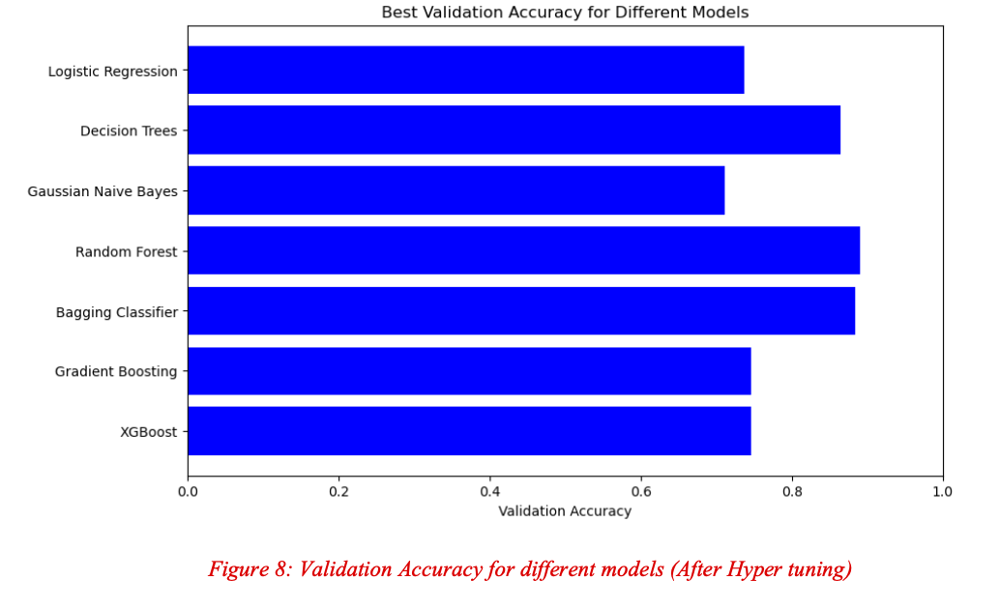
6. STACKING ENSEMBLE EVALUATION
The effectiveness of the Stacking Classifier, a powerful ensemble learning approach that draws on the advantages of many base models, is examined in depth as part of our assessment process. Our Stacking model comprises two levels. At Level 0, it integrates a diverse set of base models, including Logistic Regression, Decision Trees, Random Forest, Bagging Classifier, Gradient Boosting, and XGBoost, to make initial predictions. These Level 0 classifiers contribute their predictions to the second-level classifier, which, in our case, is Logistic Regression. This two-level architecture harnesses the unique capabilities of the base models, enhancing our model’s predictive accuracy.
The evaluation process is designed to assess the real-world performance and generalization ability of our Stacking Classifier using the test dataset. Performance metrics such as accuracy, precision, recall, and F1- Score will be employed to evaluate the model’s effectiveness in accurately classifying instances and identifying positive cases. Additionally, we will make a comparative assessment of our Stacking ensemble alongside the hyperparameter-tuned best models to facilitate the selection of the optimal model. Stacking offers versatility by combining insights from diverse models, striving for enhanced performance and adaptability to unforeseen data. Our test dataset evaluation will provide insights into the practical utility and predictive accuracy of our Stacking Classifier in real-world contexts.
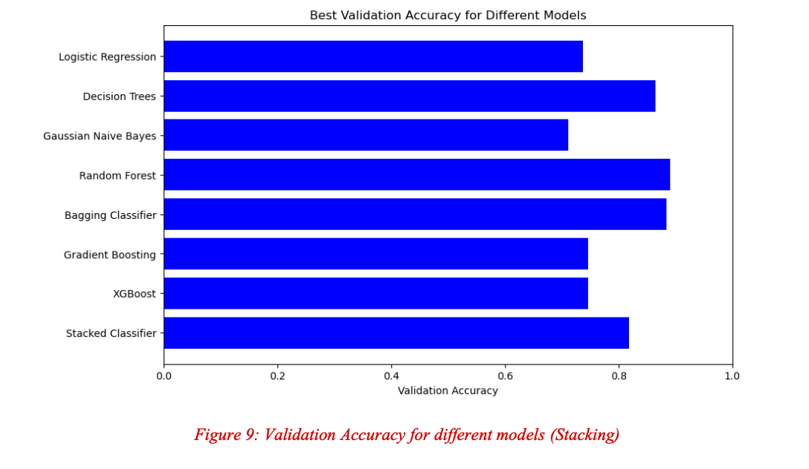
The analysis is evident from Figure 9 that the “Random Forest” model leads the pack in terms of validation accuracy and other crucial evaluation metrics. This model secured the highest validation accuracy of 0.890, outperforming all other models tested. It’s worth noting that the Stacked Classifier, surprisingly, fell short in comparison to three individual models: Decision Trees, Random Forests, and Bagging Classifier. Given the exceptional performance of the “Random Forest” model, which also surpasses the Stacked Classifier, it emerges as the logical choice for further assessment using the test data. This decision is substantiated by its robust performance, as previously elaborated. Moving ahead with the “Random Forest” model for the test data evaluation is a sensible step, and we anticipate its ability to maintain a high level of performance when dealing with new and unseen data. This choice is underpinned by the model’s exceptional validation results, hyperparameter tuning, and its proven reliability in practical applications.
7. EVALUATION OF THE OVERALL BEST FIT MODEL
The evaluation of our overall best-performing model, the “Random Forest,” on the test dataset has yielded promising results. Let’s dive into the key performance metrics to gain a comprehensive understanding of its capabilities:
• Accuracy (0.838): Accuracy is a fundamental metric that measures the proportion of correctly classified instances by the model. In this case, our “Random Forest” model achieved an accuracy of 0.838, indicating that approximately 83.8% of the test data samples were correctly predicted.
• Precision (0.800): Precision represents the model’s ability to make accurate positive predictions. A precision of 0.800 signifies that out of all instances predicted as positive, 80% were indeed true positive cases. When the model identified a patient as having a certain condition, it was correct 80% of the time.
• Recall (0.903): Recall, also known as sensitivity, quantifies the proportion of actual positive cases correctly predicted by the model. A recall of 0.903 implies that the model correctly identified approximately 90.3% of all the positive cases within the test data.
• F1-Score (0.848): The F1-Score harmonizes precision and recall, offering a balanced assessment of the model’s performance. An F1-Score of 0.848 indicates that the “Random Forest” model effectively balances accurate positive predictions and the capture of most actual positive cases.
We can conclude that the “Random Forest” model exhibited strong performance on the test data, achieving an accuracy of 83.8%. It demonstrated robust precision (80%), ensuring accurate positive predictions, and high recall (90.3%), signifying its ability to capture a substantial portion of actual positive cases. The F1-Score (0.848) confirms the model’s proficiency in classification tasks, making it a reliable choice for our specific task.
Our subsequent action involves utilizing Pickle to export the overall best model. This process empowers us to preserve the meticulously trained model, complete with its finely optimized hyperparameters, for future utilization in making predictions on novel, unseen data.
To gain deeper insights into the predictive performance of our overall best model, we will examine the confusion matrix. This critical tool in classification tasks provides a detailed breakdown of the model’s classification results, helping us understand the nature of correct and incorrect predictions.
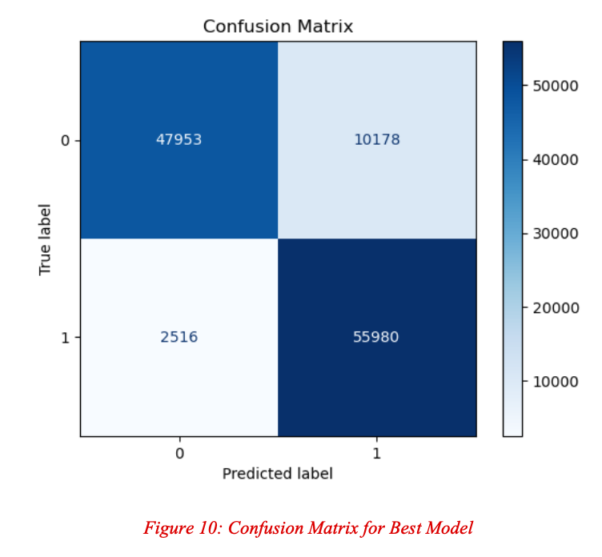
A detailed breakdown of the classification results of our “Best Fit Classifier,” the “Random Forest” is showed in figure 10. The confusion matrix showcases the “Best Fit Classifier,” i.e., the “Random Forest,” as a strong performer. It correctly identified a significant number of diabetic and non-diabetic cases (TP and TN) while making relatively few errors in the form of false positives (FP) and false negatives (FN). This suggests that the classifier effectively fulfills its task, exhibiting high accuracy and a low rate of misclassifications.
However, as we analyze the validation and test accuracies, a slight concern emerges. It appears that our model may be exhibiting signs of overfitting, where it performs exceptionally well on the training data but struggles to generalize equally effectively to new, unseen test data.
Given the critical nature of medical data and the potential consequences of incorrect predictions, we must exercise caution. To ensure the model’s reliability in real-world applications, we may need to make a careful decision about its optimal configuration and consider methods to address potential overfitting.
8. MODEL SELECTION CONSIDERATION
While the “Random Forest” emerged as the top-performing model in prior evaluations, the potential overfitting issue on the test data has raised concerns. The context of medical data necessitates an extremely low margin of error. Therefore, making a well-informed choice regarding the optimal model configuration is of utmost importance.
Hence, we are reconsidered our choice and further evaluated the models that had a similar performance to this one for validation which left us with three choices:
Decision Trees
Bagging Classifier
Stacked Classifier
We evaluated these models on test data and then compared which one of these performs the best and avoids potential issues such as overfitting which is shown in Table 4.
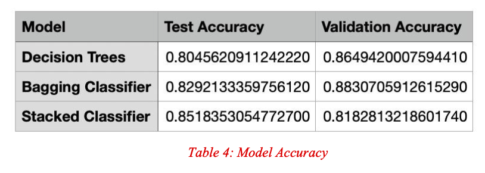
It is evident that the Stacked Classifier emerges as the top-performing model in our evaluation. Interestingly, both the Decision Trees and Bagging Classifier performed less effectively than the Random Forest model, which previously showed superior performance.
An important point to note is that the Stacked Classifier does not exhibit signs of overfitting, as indicated by its favorable test accuracy compared to its validation accuracy. Furthermore, the test accuracy of the Stacked Classifier surpasses that of the Random Forest model.
Let’s dive into the detailed performance metrics:
Test Data Metrics:
• Stacked Classifier Test Accuracy (0.852): The accuracy metric measures the proportion of correctly predicted instances in the test data. In this context, the Stacked Classifier achieved an impressive test accuracy of 85.2%, indicating that it accurately classified a significant portion of the test samples.
• Precision (0.834): Precision denotes the ratio of true positive predictions to the total positive predictions. An outstanding precision score of 83.4% means that when the Stacked Classifier predicts a positive case, it is correct over 83% of the time.
• Recall (0.879): Recall, also known as sensitivity or true positive rate, signifies the proportion of actual positive cases correctly identified by the model. A recall of 87.9% indicates that the Stacked Classifier correctly captured nearly 88% of all positive cases in the test data.
• F1-Score (0.856): The F1-Score, a harmonic mean of precision and recall, provides a balanced measure of a model’s accuracy. An F1-Score of 0.856 emphasizes the Stacked Classifier’s equilibrium between making accurate positive predictions and effectively identifying actual positive cases.
Validation Data Metrics:
• Stacked Classifier Validation Accuracy (0.818): The validation accuracy serves as a baseline for the model’s performance. In this case, the Stacked Classifier exhibited a commendable validation accuracy of 81.8%.
In summary, the Stacked Classifier stands out as the best-fit model, demonstrating remarkable accuracy and balance between precision and recall. Furthermore, it showcases superior test accuracy without signs of overfitting when compared to the Random Forest. These results indicate the Stacked Classifier’s robustness and efficiency in classifying patients based on diabetes diagnosis, making it a promising choice for real-world applications.
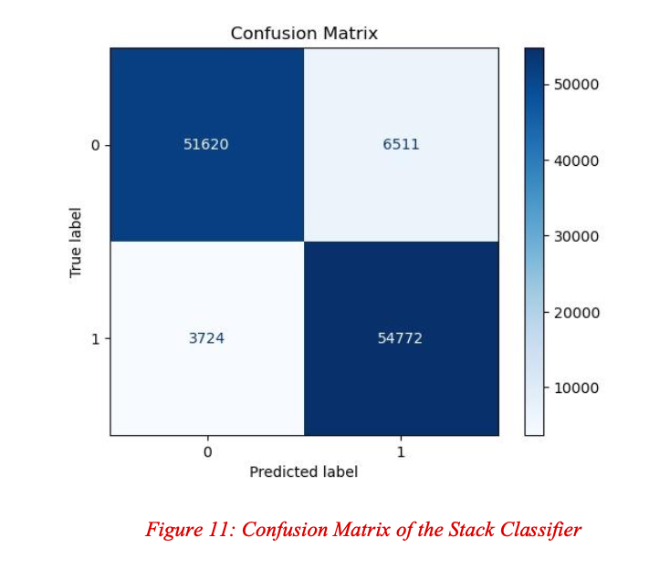
The Stacked Classifier has demonstrated its proficiency by correctly classifying 54,772 diabetic patients and 51,620 non- diabetic patients (Figure 11). However, it’s essential to acknowledge the presence of false positives and false negatives in the predictions.
In the context of medical data, false negatives are of particular concern. A false negative occurs when the model incorrectly predicts that a patient does not have a certain condition, but they do. While there are some false negatives in our predictions, the reassuring aspect is the model’s high recall score (0.879). Recall, also known as sensitivity, measures the proportion of actual positive cases correctly identified by the model. The impressive recall score of 87.9% indicates that the Stacked Classifier accurately captured nearly 88% of all positive cases within the test data.
This strong recall score is a testament to the model’s ability to effectively identify patients with diabetes. While false negatives are indeed concerning in a medical context, the high recall mitigates this concern by highlighting the model’s capability to capture a significant majority of actual positive cases.
In conclusion, the Stacked Classifier’s metrics provide confidence in its performance, and it can prove to be a reliable tool for identifying diabetes in a patient.
9. DEPLOYMENT
For the final deployment of the Diabetes Checkpoint Pro App on Heroku, we have prioritized user-friendliness to ensure a seamless and efficient user experience. The application engages users through a questionnaire primarily consisting of multiple-choice questions (MCQs) which is suitable for most feature variables that are Booleans and captures crucial input feature variables for predicting diabetes risk. Below, we outline the questions asked and the corresponding user responses:
- Name
- Sex
- Age Group
- Education Level
- Income Range
- Do you have high blood pressure?
- Do you have high cholesterol?
- Did you check for cholesterol in the last 5 years?
- Ever had a stroke?
- Do you have coronary heart disease (CHD) or myocardial infarction (MI)?
- Have you smoked at least 100 cigarettes in your entire life?
- Have you engaged in heavy alcohol consumption?
- Was there a time in the past 12 months when you needed to see a doctor but could not because of cost?
- Do you have any kind of health care coverage, including health insurance, prepaid plans such as HMO, etc.?
- Now thinking about your mental health, which includes stress, depression, and problems with emotions, for how many days during the past 30 days was your mental health not good?
- Now thinking about your physical health, which includes physical illness and injury, for how many days during the past 30 days was your physical health not good?
- Any physical activity in the past 30 days (excluding job)?
- Do you struggle with walking or climbing stairs?
- Do you consume fruits 1 or more times per day?
- Do you consume vegetables 1 or more times per day?
- Would you say that, in general, your health is? 22.How would you categorize your BMI?
These questions cover a wide range of demographic, lifestyle, and health-related factors, enabling us to make accurate predictions regarding an individual’s diabetes risk. The user-friendly interface enhances accessibility, making it easier for both healthcare professionals and individuals to utilize this valuable tool for diabetes risk assessment. Figure 12 offers an overview of the application, showcasing its ability to predict an individual’s diabetes status. Upon completion of the user form, the system redirects users to the results page, promptly displaying their diabetes risk assessment. Figure 12 also provides a visual demonstration of the result page.
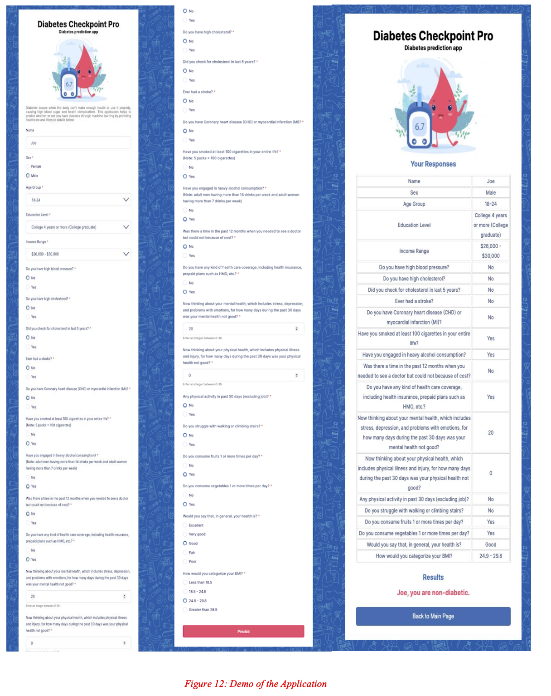
To test the Diabetes Checkpoint Pro App, we have provided five sample sets of information below. You can access the app by following the provided link: https://diabetesprediction-bb75d93351b1.herokuapp.com/
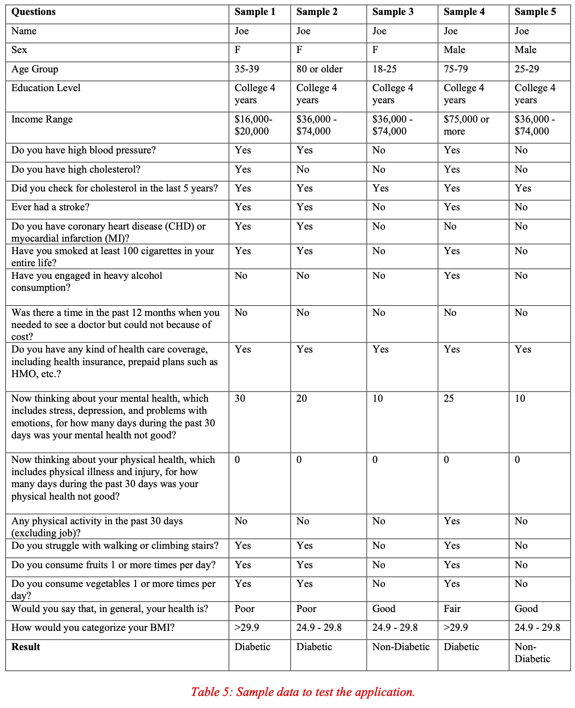
CONCLUSION
Our Heroku deployment places a strong emphasis on user-friendliness, ensuring that individuals can effortlessly predict their diabetes status by providing input feature variables. The user-centric approach enhances the accessibility of our predictive model and empowers users to make informed healthcare decisions through a seamless and intuitive experience. Users are guided through a straightforward questionnaire, facilitating the collection of essential information for diabetes risk assessment. Within moments, they receive prompt results, allowing them to gain valuable insights into their diabetes status based on the provided feature variables. Our commitment to user-friendliness and accessibility underscores our dedication to providing a valuable tool for healthcare assessment. We believe that by simplifying the process and putting the power of informed decision-making in the hands of individuals, we can contribute positively to healthcare outcomes and enhance overall well-being.